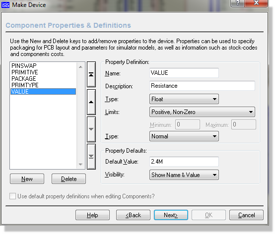

Property definitions are entered using the Component Properties page in the Make Device dialogue form. For more detailed information use the context sensitive help on the dialogue form and/or refer to the instruction on making a device.

The Component Properties Page of the Make Device Dialogue Form
You can also create property definitions implicitly by adding fields to the Bill of Materials report. For example, if you add a field for Minimum Order Quantity (MoQ) to the BOM, you can then populate it with values per component and apply changes back to the schematic. This will update your property definitions with the specification for the MoQ property. For more information please see the chapter on Bill of Materials.
If you add property definitions through Make Device then that definition and value is stored in the Library for re-use in other projects. If you use the Property Editor in the Bill of Materials the changes are applied only to the current schematic. You can of course then use the global Compile to Library command to store the modified parts for future re-use.
Managed properties are relevant only with the managed libraries workflow ; if you do not have managed libraries then you can skip this section. In a managed workflow they serve two main purposes
1. Managed Properties are read only to the user on the schematic.
2. Managed Properties will be overwritten by the Manage Changes Tool during project review.
The former serves to protect the integrity of managed parts from accidental changes in the design and the latter is essential during part update/refresh by the reviewer.
In an unmanaged workflow (system settings -> managed libraries checkbox turned off) managed properties do nothing.
A managed property is one which the librarian wants to maintain control over, most likely as it helps describe the part or is relevant to the bill of materials. Examples include RoHS, MoQ, COST, SUPPLIER, CODE, and so on. By contrast an unmanaged property will be one that the user can change even in managed mode. Almost always these will be simulation properties not relevant to describing the physical ordering process.
A full description of managed properties and information about how to set them up and work with them can be found in the library manager help file (LIBMAN.CHM), accessible from the help menu in the library manager module.
A number of properties are will be applied to most devices that you create. For example, anything that is going onto a PCB will need a PACKAGE property, and anything that has a simulator model will need a MODFILE, MODEL or SPICEMODEL property. You can also define a property definition for the part value. This allows you to change the description of the part value, and to provide range checking for it in the same way as for other properties.
You may also want to apply your own properties such as MoQ, SUPPLIER or COST to most of the devices that you create. If you plan to create managed libraries then you will want to make these managed properties as described above.
To make this easier, there is a list of default property definitions which can be defined using the Set Property Definitions command. The properties defined with this command are available on the Name field combo on the Properties tab of the Make Device dialog form
Alternatively, if you are not working with managed libraries, you can work directly through the Bill of Materials module. If you are working with managed libraries then all of these properties will be in your library parts and the way to change them is to update the managed library parts.
In either case, the information you define is held in the file PROPDEFS.INI located in library directory of your Proteus installation.
Refer to the Library Manager help file to learn about managed libraries and working in a managed Proteus environment.